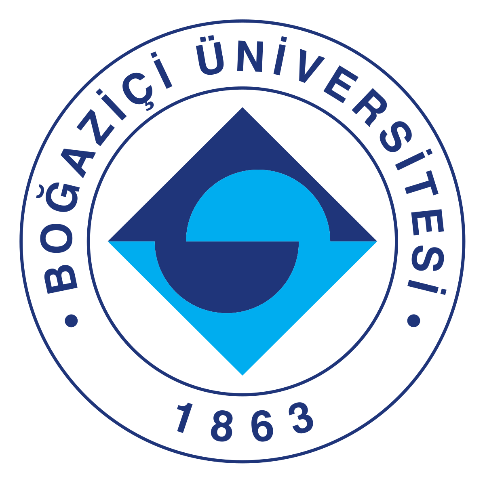
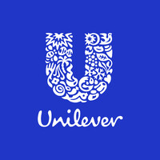

Özgür Üstün
Experienced Key Account Sales Supervisor in Retail,
Horeca and B2B channels with a demonstrated history of working in the glass sector more than 3 years. Skilled in Sales and Marketing Management, Business Planning, Negotiation and Sales Operations.
Education
M.Sc., FinTech and Policy (Sep. 2022 - Sep. 2023)
| University of Surrey, Guildford, The United Kingdom |
B.A., Economics (Feb. 2018 - Jun. 2018)
| University of Sogang, Seoul, Korea - Student Exchange Program |
B.A., Economics (Sep. 2014 - Jun. 2019)
|  | Bogazici University, Istanbul, Turkiye - GPA: 2.94/4.00 |
Experience
Sales Supervisor (May 2022 - Sep. 2022)

Key Account Specialist (Sep. 2019 - May 2022)
International Customer Management Intern (Jan. 2019 - Sep. 2019)
Marketing Intern (May 2016 - Sep. 2016)
Certificates
| Bloomberg Market Concepts October 2022 |
| The EU Jean Monnet Scholarship Programme September 2022 |
|  | BizzTrip2UnileverXIII Marketing Case Study 1st Place December 2018 |
| BU Maritime and Sailing Club - Advanced Sailing Training Brevet March 2018 |
| BU Maritime and Sailing Club - Basic Sailing Training Brevet October 2017 |
| Ideasoft Setting up E-Commerce Website Page June 2016 |
Voluntary Works
| International Language Camp Volunteer July - August 2018 / Rakican, Slovenia |
| International Language Camp Volunteer August 2017 / Tallinn, Estonia |
Additional Skills
✓ English: Advanced (IELTS Academic 7.5 / 9, British Council, Istanbul, Turkey)
✓ German: A2.1 (Turkish – German University, Istanbul, Turkey)
✓ Russian: Pre-intermediate (Bogazici University, Istanbul, Turkey)
✓ Korean: Beginner 1A (Korean Language Education Center, Seoul, Korea)
✓ University Entrance Exam: 9th place in Turkey among more than 2 million students (Verbal, July 2014)
✓ Debate Team Captain of Capa Science High School
✓ Volleyball Team Player of Capa Science High School
✓ Computer Skills:
✓ German: A2.1 (Turkish – German University, Istanbul, Turkey)
✓ Russian: Pre-intermediate (Bogazici University, Istanbul, Turkey)
✓ Korean: Beginner 1A (Korean Language Education Center, Seoul, Korea)
✓ University Entrance Exam: 9th place in Turkey among more than 2 million students (Verbal, July 2014)
✓ Debate Team Captain of Capa Science High School
✓ Volleyball Team Player of Capa Science High School
✓ Computer Skills:
- SAP
- Google AdWords
- SEO
- Google Trends
- HTML
- CSS
- Microsoft Office Programs
Hobbies
✓ Swimming
✓ Volleyball
✓ Sailing
✓ Travelling
✓ Volleyball
✓ Sailing
✓ Travelling